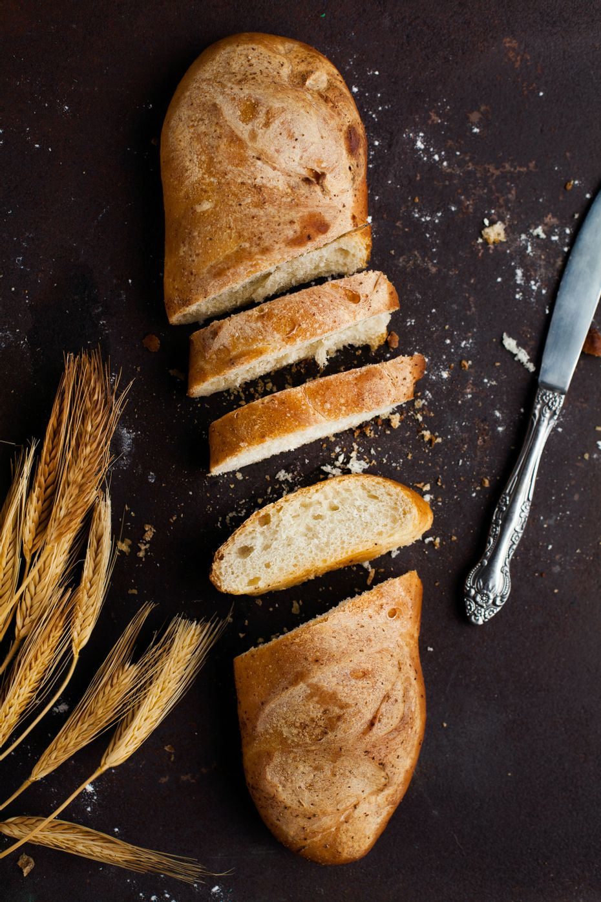
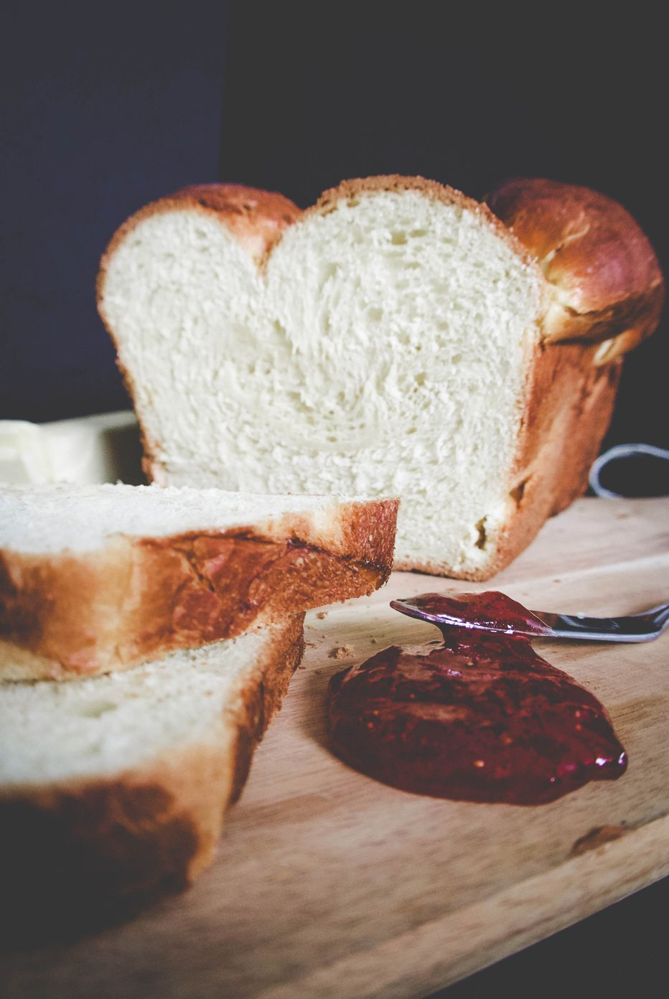
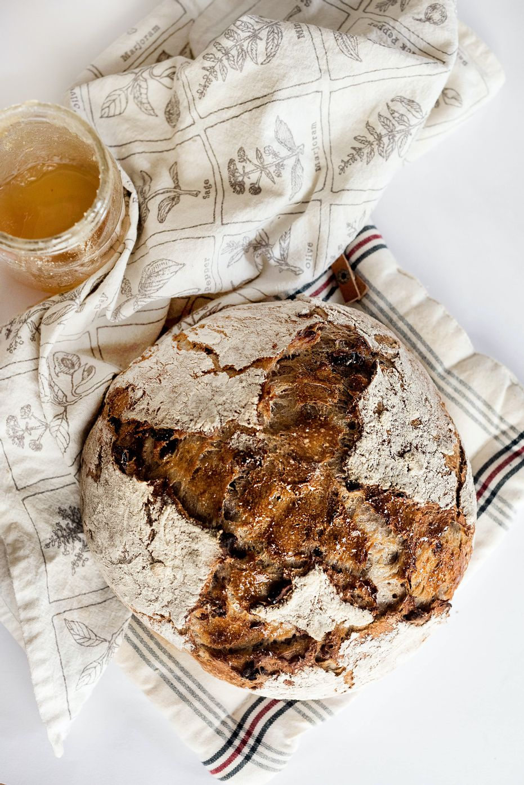
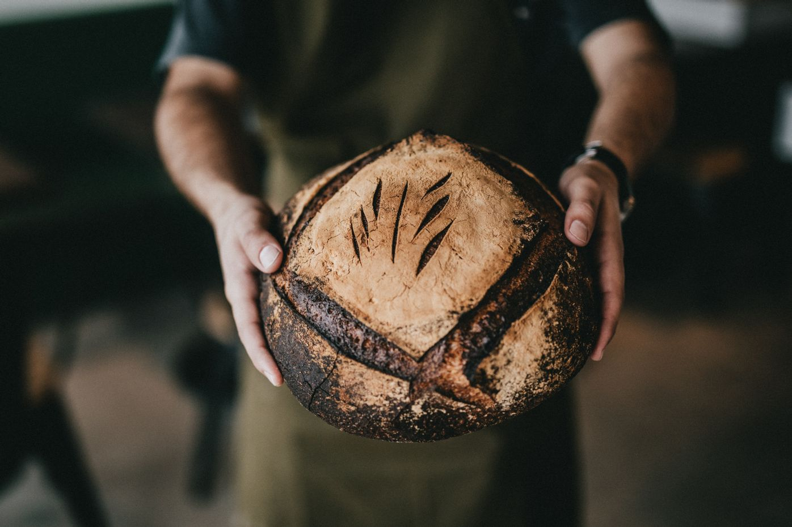

Natural yeastless bread
We take care of your health, so we bake bread with sourdough, which we prepare on our own, using only natural ingredients.
  About Panetteira
Panetteria is one of the first artisanal bakeries in Ukraine. We use only wholemeal granular flour, a mixture of whole grain flour and coarse-ground flour, as well as whole grain flour to make our bread. Each loaf is formed manually.
Our Menu
We are proud to offer you our menu with a variety of dishes to meet any taste. Be you a vegetarian or a meat lover, we always have something special for you!
The freshest and the most nutritious food for you.
Artisanal bread
Each loaf of bread is formed manually. It is one of the hallmarks of the true artisanal bread.
No yeast
We do not use yeast, so our bread is useful for the daily meals of your children.
Natural sourdough
Natural ferments enrich the body with all necessary organic acids, vitamins, minerals, enzymes, fiber, and pectic substances.
Our customers' feedback
Your morning should begin with "Panetteria"
On our shelves you can find the freshest and the most nutritious food. This is a kind of breakfast, lunch, and dinner everyone should have - delicious, natural and healthy.